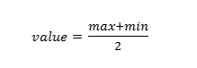

Ползунок
Ползунок предназначен для ввода чисел в указанном диапазоне, но в отличие от поля <input type="number"> имеет другой интерфейс и применяется в тех случаях, когда не особенно важно указывать точное значение.
Синтаксис создания ползунка следующий.
Здесь min — минимальное число в диапазоне (по умолчанию 0), max — максимальное число (по умолчанию 100), step — шаг изменения чисел (по умолчанию 1), value — текущее значение. По умолчанию value вычисляется по формуле:

Если значение max меньше, чем значение min, то value равно min.
Атрибуты не являются обязательными, их можно опустить, в таком случае они принимают значения по умолчанию.
Независимо от минимального и максимального числа ширина ползунка остаётся одинаковой.
Сами ползунки редко применяются в «чистом» виде, поскольку не обеспечивают необходимую обратную связь с пользователем, а вот в сочетании с JavaScript это становится мощным и удобным элементом интерфейса.
В примере 1 с помощью ползунка изменяется размер изображения, такая возможность часто используется в различных фотогалереях.
Пример 1. Использование ползунка
Размер рисунка:
В данном примере при управлении ползунком срабатывает событие oninput, которое вызывает функцию sizePic. Эта функция изменяет размер изображения в зависимости от установленного пользователем значения ползунка. Тем самым ширина картинки при желании уменьшается или наоборот, увеличивается.
Старые версии браузеров, которые не поддерживают значение range для атрибута type, отображают поле формы как текстовое.